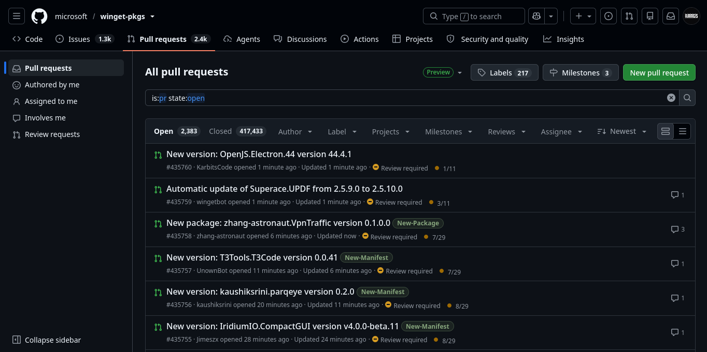
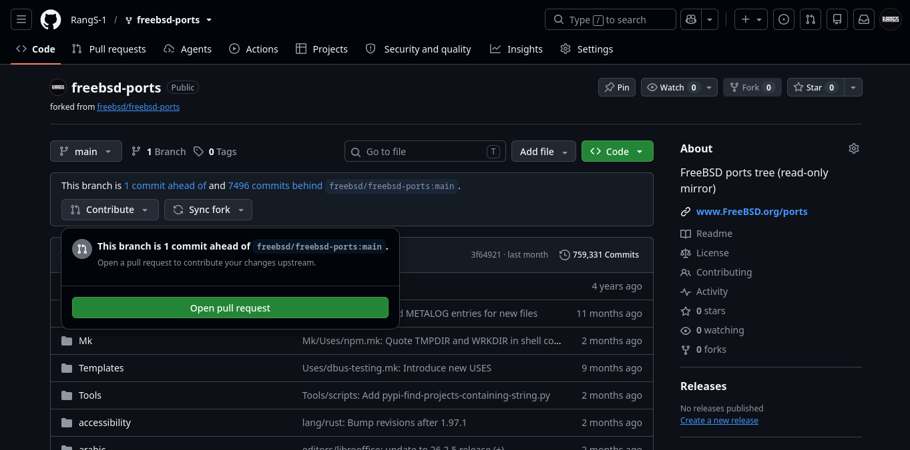
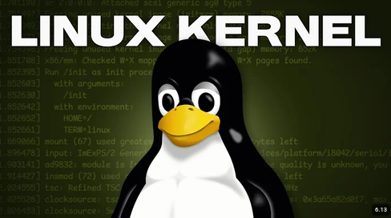

Apa itu Pull Request?
Pull Request adalah salah satu cara kontribusi untuk repository open source di github.
“Open source is a development methodology; free software is a social movement.”
— Richard Stallman, Open Source Initiative Founder
Pada artikel ini, kita akan bahas tentang Pull Request, terutama pada etika kontribusi terhadap open source.
Pull Request

Jadi apa itu Pull Request? pull request adalah sistem untuk mengajukan usulan atau permintaan resmi untuk menggabungkan kode atau memperbaiki kode pada sebuah project open source.
Bayangkan seperti ini, kita adalah pengguna biasa dan menggunakan aplikasi-aplikasi yang berhubungan dengan open source, contoh paling nyata adalah Visual Studio Code. Kita sedang menggunakan aplikasi tersebut, tetapi kita menemukan bug dari aplikasi tersebut. Karena itu kita membuat versi kita sendiri dan membuat pull request agar orang lain yang menggunakannya tidak lagi mendapatkan bug tersebut pada versi mereka.
Baca Juga: Git: Sang pengontrol versi terbaik andalan programmer
Etika Open Source
Dalam project besar yang bersifat open source, terdapat beberapa etika yang perlu diperhatikan. Sejauh yang kutahu, etika project open source biasanya tersimpan dalam file CONTRIBUTING.md dan CODE_OF_CONDUCT.md. Project open source besar biasanya memiliki CONTRIBUTING.md yang berisi cara kerja untuk kontribusi pada mereka. Namun, di sini aku akan menjelaskan cara normal yang biasa digunakan oleh project-project kecil.
Membuat Pull Request
Langkah pertama dalam membuat pull request adalah dengan membuat fork atau aplikasi versi dirimu sendiri. Setelah membuat fork di akun githubmu sendiri, kau bisa cloning dengan perintah git:
git clone https://github.com/<nama-akunmu>/<nama-project>Jika sudah selesai cloning, ya waktunya bekerja. Misalnya kau cloning sebuah project web, kau bisa memberi tambahan berupa fitur baru atau perbaikan bug pada project tersebut. Kalau sudah selesai membuat fiturmu sendiri, kau bisa commit dan push ke repositorymu dengan perintah:
git add .
git commit -m "Fitur Barumu"
git push origin mainSetelah berhasil push ke fork repositorymu, coba buka halaman repository di github, harusnya kau bisa melihat tombol Contribute yang ketika diklik akan ada tombol open pull request.

Jika kau menekan tombol open pull request, nanti akan ada semacam comment yang di mana kau bisa menjelaskan cara kerja dari fiturmu atau bug yanng kau perbaiki. Tinggal klik tombol create pull request dan kau telah membuat pull request untuk project tersebut.
Kalau sudah selesai membuat pull request, waktunya menunggu. Menunggu pull request sampai di terima oleh pemilik repository terkadang tidak memiliki kepastian, aku pernah membuat pull request di repository winget-pkgs milik microsoft, tahu berapa lama sampai diterima? 2 minggu, itu jika sudah diterima, belum lagi jika ditolak dan perlu perbaikan, bisa berapa lama tuh. Setelah pull request di terima oleh pemilik repository, pull request akan di merge atau digabungkan oleh pemilik dan kau tercatat sebagai contributor.
Manfaat Kontribusi.
Kamu mungkin berpikir "Untuk apa kontribusi pada project orang lain? bukankah itu menguntungkan mereka?". Nah, ada beberapa manfaat dari kontribusi pada project open source seperti:
- Mudah diketahui rekruter (HRD jika bekerja)
- Menambah koneksi dengan para profesional lainnya
- Sebagai bahan portfolio global
- Meningkatkan skill
Dari semua manfaat tersebut, yang paling terasa adalah meningkatnya skill. Kenapa? karena dengan kontribusi pada project open source, kita tahu bagaimana ekosistem tingkat perusahaan dilakukan dan dikelola. Jadi jika kau bekerja dalam perusahaan besar, kau akan lebih mudah beradaptasi. Meski begitu, ada beberapa hal yang perlu diperhatikan seperti apakah projectnya masih relevan dan dikelola oleh pemilik dan lain-lain.
Baca Juga: Winget: Mencoba ekosistem package manager di Windows
Kesimpulan
Dari artikel ini kita bisa menyimpulkan bahwa kontribusi open source memiliki manfaat yang sangat berharga, terutama project open source ini akan membantumu untuk beradaptasi jika bekerja di perusahaan besar.
Lalu pull request adalah cara paling standar dalam memberi kontribusi. Jika kau tertarik dalam kontribusi open source, bisa tonton pengalaman dari video berikut:
Link ke Video.
